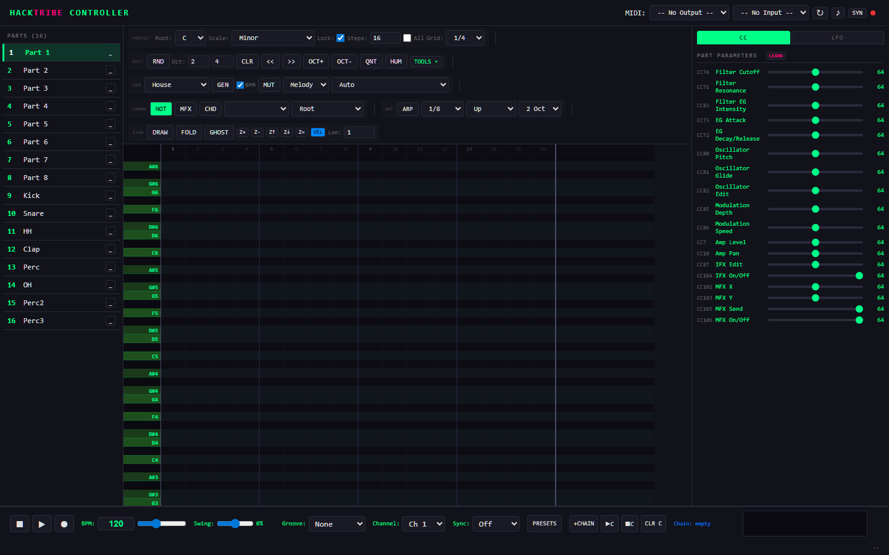
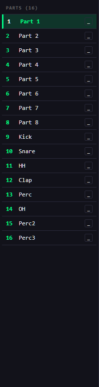
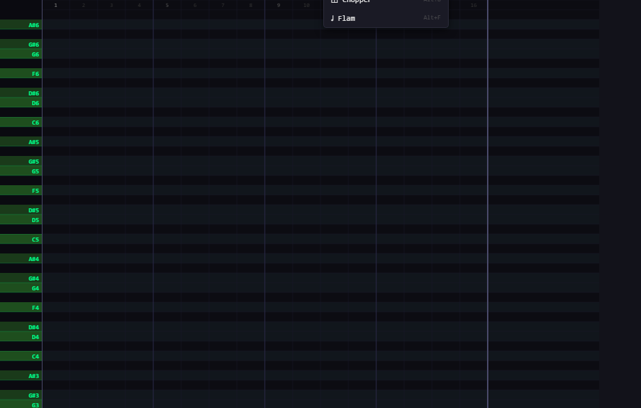
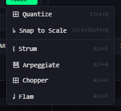
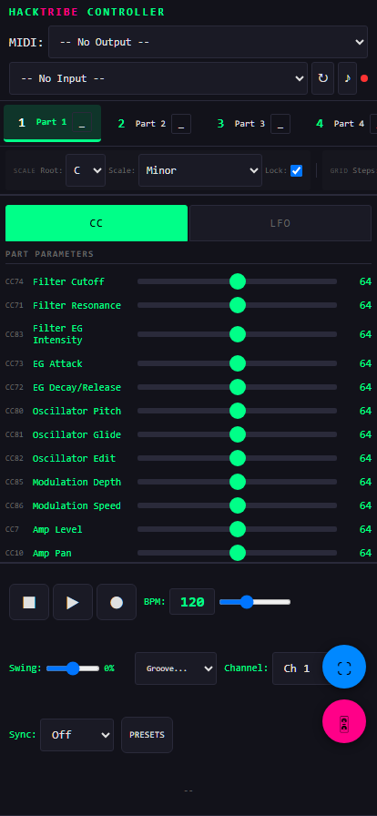

HACKTRIBE
CONTROLLER
Manual de Usuario
Controlador MIDI completo para KORG Electribe E2/E2s/Hacktribe. 16 partes, generación de patrones, edición avanzada de notas, sistema LFO y presets — todo en un solo archivo HTML.
Contenidos
01 · Requisitos Previos
Todo lo que necesitás para empezar
Archivo Único
La aplicación es un archivo HTML único sin dependencias externas. No necesita conexión a internet, servidor web ni archivos adicionales. Simplemente hacé doble clic en el archivo para abrirlo en el navegador.
Versión Móvil
La versión móvil se ejecuta directamente desde GitHub. No necesita instalación ni configuración.
https://gallegherplus.github.io/hacktribe-controller/MOBILE.htmlVersión Desktop
La versión de escritorio se puede descargar al PC y usar de forma completamente standalone.
- Descargá el archivo
DESKTOP.htmly abrilo con doble clic - Usá el secuenciador y generador sin hardware
- Conectá el Electribe por USB y seleccioná en MIDI Output
- Controlá el hardware en tiempo real
- Creá proyectos y guardalos como archivos
- Exportá y pasalos al hardware después
02 · Conexión MIDI
Conectá tu Electribe y empezá a controlar
Paso a paso
- Conecta el KORG Electribe por USB
- Abre la app en Chrome, Edge u Opera
- Haz clic en cualquier lugar para inicializar MIDI
- Selecciona el dispositivo en MIDI Output
- El punto verde indica conexión OK

Interfaz completa — toolbar, partes y piano roll
Interfaz de conexión
| Elemento | Función |
|---|---|
| MIDI Output | Selecciona dispositivo de salida |
| MIDI Input | Selecciona dispositivo de entrada |
| ↻ | Re-escanea dispositivos |
| ♪ | Nota de prueba |
| ● | Estado: verde = OK |
03 · Parts (Partes)
16 canales MIDI independientes

Selector de partes — 16 canales
La barra lateral muestra 16 partes independientes. Cada parte es un canal MIDI separado.
Controles por parte
| Elemento | Función |
|---|---|
| Part 1–16 | Selecciona parte |
| _ / M | Mute |
Configuración MIDI
| Parámetro | Rango | Descripción |
|---|---|---|
| Channel | 1–16 | Canal MIDI |
| Octave | -3 a +3 | Transposición |
| Tone | 0–127 | Tono |
| Velocity | 0–127 | Velocidad |
| Note Length | 0–127 | Duración |
| Mute | On/Off | Silenciar |
| Solo | On/Off | Solo esta parte |
| Bank | 0–7 | Banco |
04 · Piano Roll
Editor de patrones: 32 compases × 128 notas

Piano Roll — clic para crear, arrastrar para mover
Grilla
Controles
| Control | Valores |
|---|---|
| Root | C–B |
| Scale | Major, Minor, Dorian, etc. |
| Lock | ON/OFF escala |
| Steps | 1–64 |
| Grid | 1/1 – 1/32 |
| Note Len | 0.25–16 |
Escalas
| Major | Minor | Dorian |
| Phrygian | Lydian | Mixolydian |
| Pentatonic | Blues | Hijaz |
| Japanese | Arabic | Whole Tone |
Edición
Mouse
| Acción | Resultado |
|---|---|
| Clic vacío | Agrega nota |
| Clic nota | Selecciona |
| Arrastrar | Mueve |
| Shift+clic | Elimina |
| Clic derecho | Menú |
Herramientas
| Botón | Función |
|---|---|
| RND | Aleatorizar |
| CLR | Limpiar |
| OCT± | Transponer octava |
| CHD | Modo acorde |
05 · Generación de Patrones
El corazón creativo del controlador
Seleccioná un estilo, ajustá los parámetros y tocá Generate.
Controles
| Control | Función |
|---|---|
| Style | Estilo musical |
| GEN | Genera patrón |
| MUT | Muta notas |
| Mono/Poly | Mono vs acordes |
Parámetros
| Parámetro | Rango | Descripción |
|---|---|---|
| Density | 0–100% | Probabilidad de notas |
| Octave Range | 1–4 | Rango de octavas |
| Note Length | 0.25–4 | Duración base |
| Velocity | 0–127 | Velocidad base |
| Swing | 0–100% | Cantidad de swing |
| Syncopation | 0–100% | Sincopación |
06 · Herramientas de Edición
Transformá tus notas con herramientas profesionales

Menú de herramientas
Quantize
Alinea notas a la cuadrícula.
| Opción | Descripción |
|---|---|
| Grid | 1/4, 1/8, 1/16, 1/32 |
| Strength | 0–100% |
| Scope | Selected / All |
Strum · Arpegiate · Chopper · Flam
Strum
Efecto rasgueo. Delay: 1–50 ms · Dir: Up/Down/Random
Arpegiate
Acordes → arpegios. Pattern: Up, Down, UpDown, Random · Rate: 1/4–1/16
Chopper
Fragmenta notas largas. Divisions + Gate %
Flam
Nota previa corta. Delay ms + Velocity
Humanize
| Parámetro | Rango |
|---|---|
| Velocity Pct | 0–100% |
| Timing Pct | 0–100% |
07 · Panel de CC
Control en tiempo real del Electribe
Cada slider controla un parámetro. Todos los valores son por parte.
| Parámetro | CC | Rango |
|---|---|---|
| Filter Cutoff | 74 | 0–127 |
| Filter Resonance | 71 | 0–127 |
| EG Attack | 73 | 0–127 |
| EG Decay | 72 | 0–127 |
| Osc Pitch | 80 | 0–127 |
| Mod Depth | 85 | 0–127 |
| Amp Level | 7 | 0–127 |
| Amp Pan | 10 | 0–127 |
| MFX X | 102 | 0–127 |
| MFX Y | 103 | 0–127 |
| MFX Send | 105 | 0/127 |
| MFX On | 106 | 0/127 |
08 · Panel LFO
8 LFOs independientes por parte
Header
| Control | Función |
|---|---|
| ON/OFF | Activa LFO |
| Forma | Sin, Tri, Saw, Sq, S&H |
| X / Y | Asigna a MFX |
Parámetros
| Control | Función |
|---|---|
| Rate | 16:1 → 1/32 |
| Depth | 0–100% |
| Dest | CC destino |
| Min/Max | 0–127 |
09 · Transporte y Sincronización
Control de reproducción y MIDI sync
| Control | Atajo | Función |
|---|---|---|
| ⏹ | Esc | Stop |
| ▶ | Espacio | Play/Stop |
| ⏺ | R | Record |
| BPM | — | 20–300 |
| Sync | — | Off/Master/Slave |
🔴 Off
Sin reloj MIDI.
🟢 Master
Envía Clock al Electribe.
🔵 Slave
Recibe Clock del Electribe.
10 · MFX (Master Effects)
Control del pad XY
Uso
- Selecciona parte
- Activa MFX
- LFOs modulan CC 102 (X) y CC 103 (Y)
11 · Estilos de Generación
18 estilos musicales
| Estilo | BPM | Características |
|---|---|---|
| House | 124–128 | Rítmica, 4 acordes |
| Deep House | 118–124 | Sparse, largos |
| Techno | 130–140 | Punchy, 2 acordes |
| Trance | 136–145 | Arpegios, 7ths |
| DnB | 172–178 | Sincopado |
| Acid | 126–135 | Every-step, octave jumps |
| Ambient | 80–110 | Sparse, 7ths largos |
| Trap | 135–160 | Sparse, octave jumps |
| Jazz | 110–140 | Walking bass, 7ths |
| Funk | 100–115 | Sincopado, ghosts |
| Lo-Fi | 70–90 | Sparse, swing |
12 · Voiceings de Acordes
Distribución de notas
| Voiceing | Descripción | Efecto |
|---|---|---|
| Root | Posición raíz | Estable |
| 1st Inv | 3ª en la base | Ligero |
| 2nd Inv | 5ª en la base | Flotante |
| Open | Alternas suben octava | Amplio |
| Drop 2 | 2ª más alta baja octava | Jazz |
| Spread | Cada nota su octava | Orquestal |
13 · Groove y Swing
Timing y feel
| Preset | Swing |
|---|---|
| None | 0% |
| Swing | 20% |
| Shuffle | 30% |
| MPC 60 | 22% |
| MPC 3000 | 18% |
| Linn | 25% |
14 · Presets y Exportación
Guardá y compartí proyectos
Guardar
- Panel Presets
- + SAVE
- Nombre
Cargar
- Panel Presets
- LOAD
| Función | Formato |
|---|---|
| Export All | .json |
| Import All | .json |
| Export MIDI | .mid |
| Import MIDI | .mid |
15 · Versión Móvil
Interfaz táctil

Versión móvil
Comparativa
| Función | Desktop | Móvil |
|---|---|---|
| Chord voicing | ✓ | ✗ |
| Velocity lane | ✓ | ✗ |
| Touch gestures | ✗ | ✓ |
| Auto-scroll | ✗ | ✓ |
16 · Atajos de Teclado
Referencia rápida
Generales
| Atajo | Función |
|---|---|
| Ctrl+Z | Deshacer |
| Ctrl+Y | Rehacer |
| Ctrl+C | Copiar |
| Ctrl+V | Pegar |
| Ctrl+A | Seleccionar todo |
| Supr | Eliminar |
Modos
| Atajo | Función |
|---|---|
| D | Draw |
| E | Erase |
| S | Select |
| M | Move |
| F | Fold |
| G | Ghost |
Herramientas
| Atajo | Función |
|---|---|
| Ctrl+Q | Quantize |
| Alt+S | Strum |
| Alt+A | Arpegiate |
| Alt+U | Chopper |
| Alt+F | Flam |
Transporte
| Atajo | Función |
|---|---|
| Espacio | Play/Stop |
| Esc | Stop |
| R | Record |
| ← → | Mover notas |
| ↑ ↓ | Semitono ± |
17 · Solución de Problemas
Problemas comunes
PC
| Problema | Solución |
|---|---|
| No conecta MIDI | Driver KORG, permisos, modo MIDI |
| Sin audio | Verificar volumen del sistema |
| Presets perdidos | localStorage preserva datos |
| Lentitud | Reducir densidad |
Móvil
| Problema | Solución |
|---|---|
| No USB | Cable OTG, permisos |
| Sin audio | Volumen dispositivo |
| Touch falla | Recargar página |
| Zoom accidental | Dos dedos |
Consejos
- Ghost notes para coherencia entre partes
- Guardar presets frecuentemente
- Humanize al final
- Snap to Scale para corregir notas
- Landscape en móvil para más espacio
MIDI Reference
| Función | Mensaje |
|---|---|
| NoteOn | 0x90 | ch, note, vel |
| NoteOff | 0x80 | ch, note, 0 |
| CC | 0xB0 | ch, cc, val |
| Clock | 0xF8 |
| Transport | 0xFA / 0xFC / 0xFB |